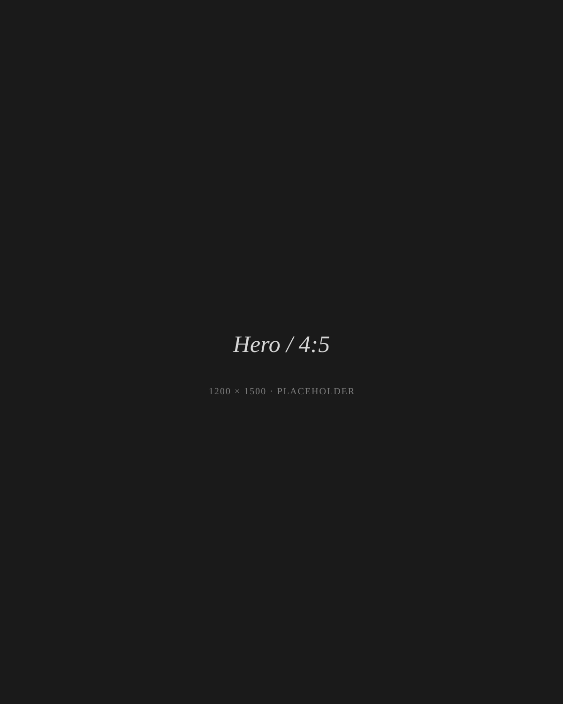
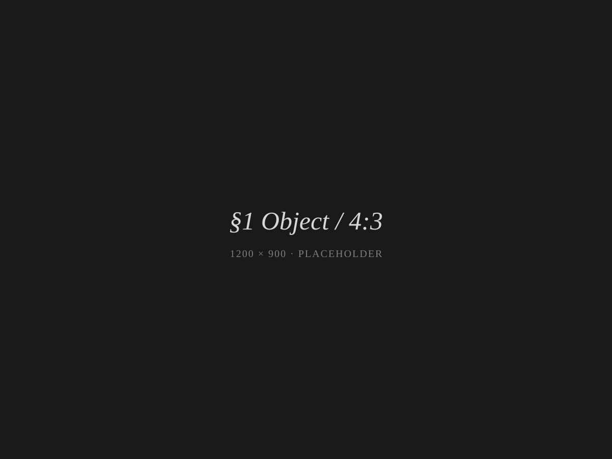
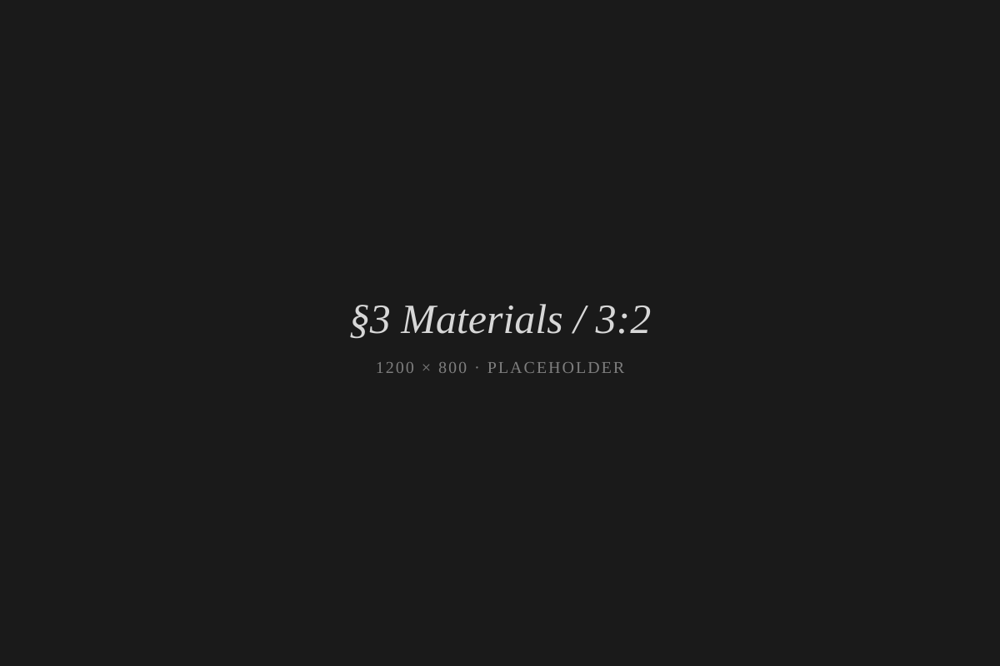
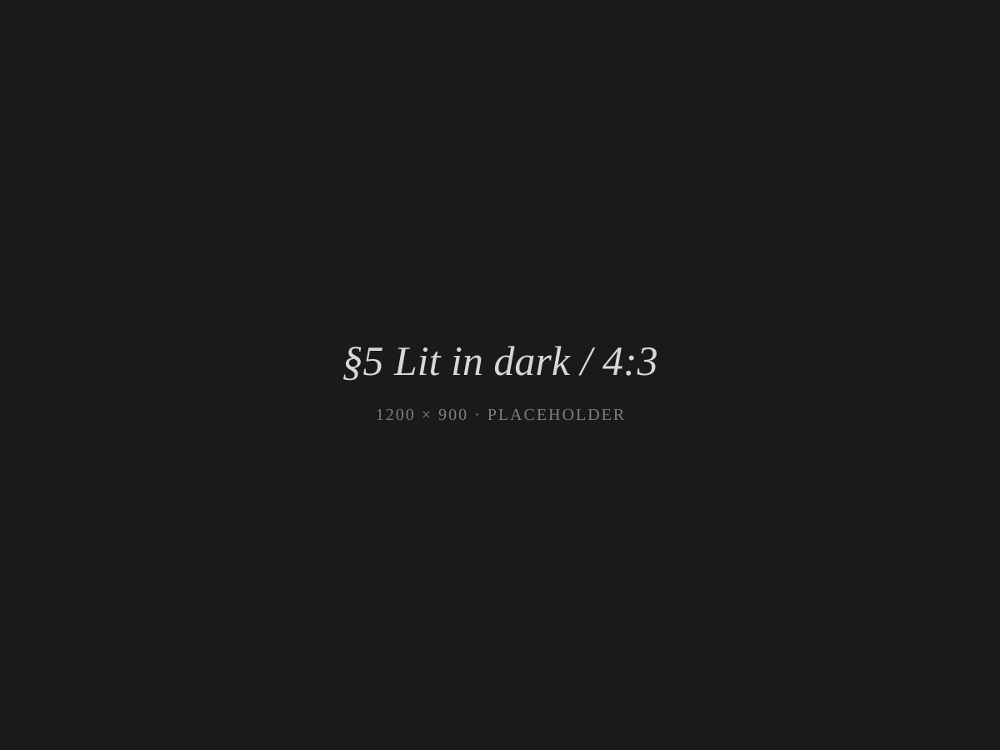

Sailing Lantern
LoveFrom × BALMUDA
A precision-engineered lantern. 1,000 pieces, worldwide.
The Object

The Sailing Lantern is a portable light, designed to be carried, held, and lived with. Two LEDs—one warm, one cool—are balanced by a single dial that controls both brightness and color temperature. Its body is precision-machined stainless steel; its lens is hand-polished glass; its frame is finished in 18K gold plating.
It is rated IP67 for water and dust ingress, and runs for 150 hours on a single USB-C charge.
It is, quietly, here.
Origin
The lantern began with a question, not a brief.
In an interview with Boat International, Sir Jony Ive said simply:
"I would have just bought a lantern for my yacht — I wanted to. But there isn't anything on the market. So instead, I spent two years hard at work designing it."
— Boat International, September 2025
The collaboration with BALMUDA, the Tokyo-based maker known for the precision of its appliances, began with an unexpected email in January 2024. From that exchange came two years of careful work between LoveFrom and Gen Terao's team.
Speaking with Wallpaper*, Gen Terao reflected on the process:
"The level of precision and polish that he wanted was something I'd never come across before."
— Gen Terao, in Wallpaper*, September 2025
The result is an object that, in Sir Jony Ive's words, "feels so alive."
Materials

Materials chosen for a lifetime of use.
Stainless Steel
Precision-machined and mirror-polished. Marine-grade. Treated to withstand salt air, oil, and ultraviolet exposure.
Glass
Hand-polished, faceted to refract and disperse the LEDs into a soft, candle-like glow. The geometry borrows from the Fresnel lenses of classical maritime lighting, reinterpreted for LED.
Brass Lens Guard
Finished in 18K gold plating. Designed to age, not fade.
Lanyard
Textured polyester, woven to resist salt, sun, and oil. Replaceable.
The lantern is designed to be disassembled, repaired, and—when its time eventually comes—recycled. Built for a lifetime, returnable to its components.
In the Press
"Warmth and emotional resonance of a live flame."
"If you hold it, it just feels right. And with the movement on a boat, it feels so alive."
"The value comes from the care that we've put into the design, engineering and manufacturing."
"It has been a considerable honour and enormously enjoyable creating our lantern with Gen and his wonderful team at BALMUDA."
"This collaboration is built on mutual respect and a shared obsession with the small, unseen details that shape our experience of an object."
A Light, Not for Lumens

A modern flashlight produces more lumens for less than fifty dollars. The Sailing Lantern is not in conversation with flashlights.
It is a quiet object — meant to be held, kept, and passed on. The kind of light you carry from one room to another, place on a table, set on the deck of a sailing boat as the sun fades. The kind of light that, when it dies for the night, fades like a flame.
It is purchased not for what it does, but for what it is.
For the Next Generation
The Sailing Lantern is built to last beyond its first owner.
Its components are accessible, replaceable, and serviceable. Its battery, when it eventually no longer holds a charge, can be replaced without specialist tools. Its glass, if ever broken, can be reset.
In the language of marine objects, a lantern of this kind becomes part of the boat. It accompanies its owners across voyages, decades, and—when the time is right—is passed on.
A lantern, kept and carried.
Available Now
The Sailing Lantern is available now from balmuda.com and selected retailers.
- $4,800 USD / €4,500 EUR / ¥550,000 JPY
- 1,000 pieces, worldwide.
- Engraved with serial number.
- Shipping from Tokyo.
For inquiries: lovefrom@balmuda.com